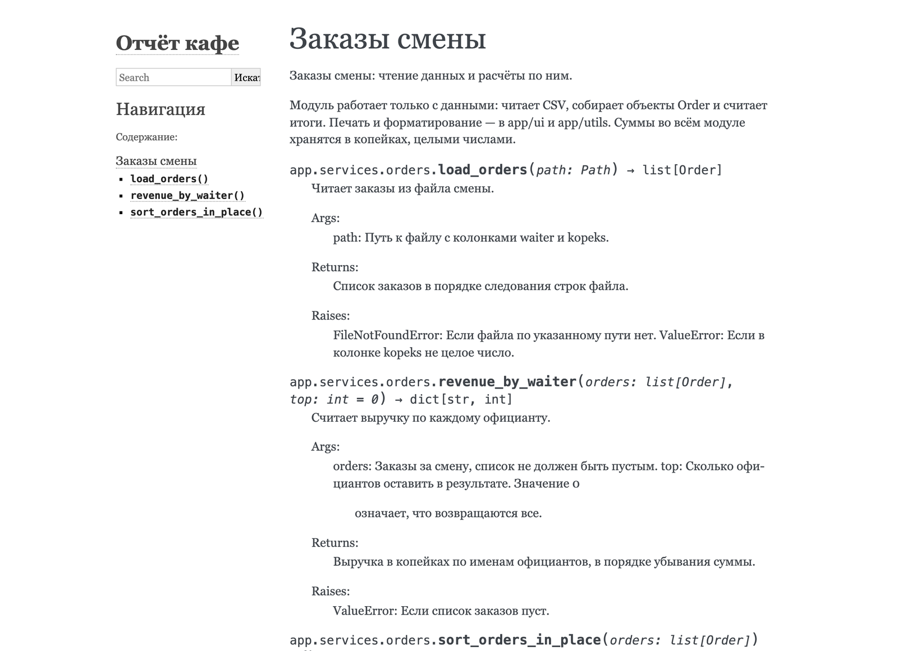
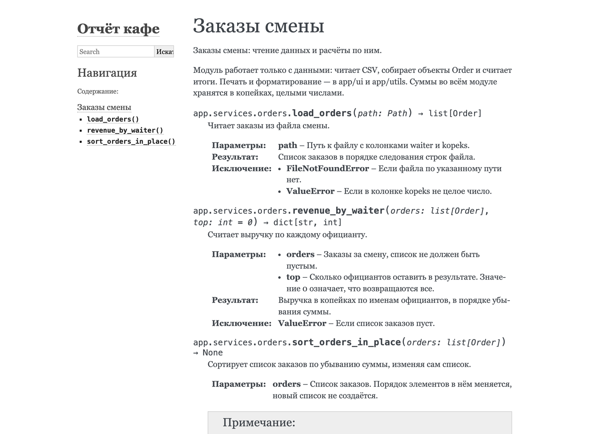
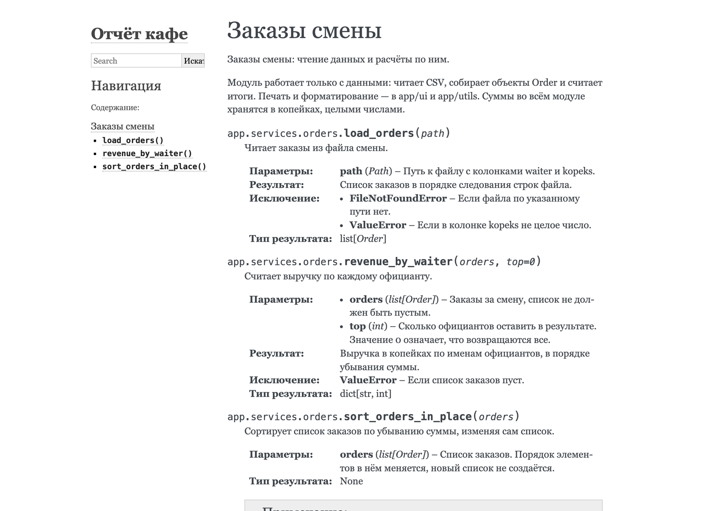
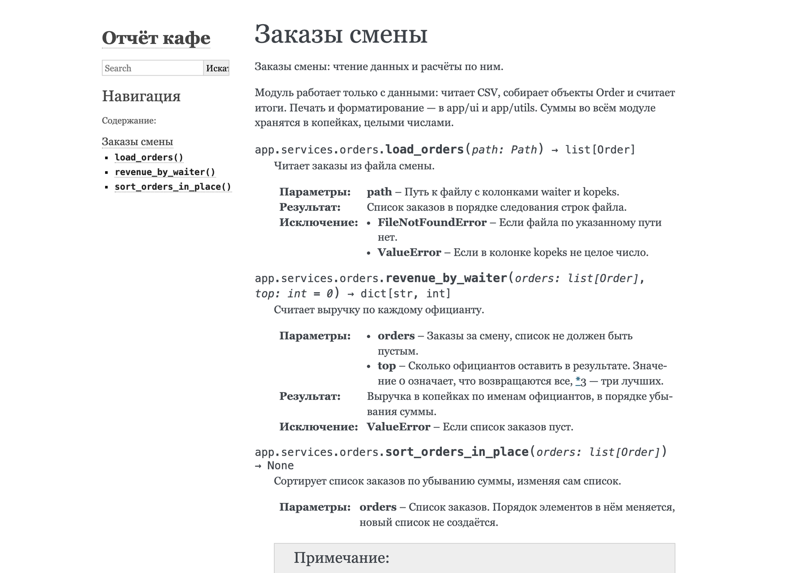
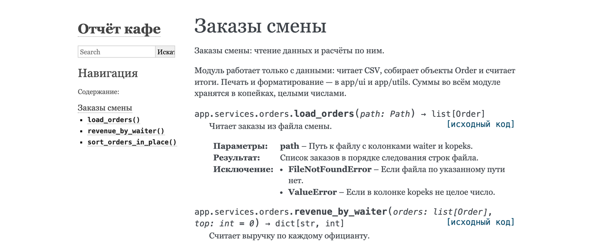
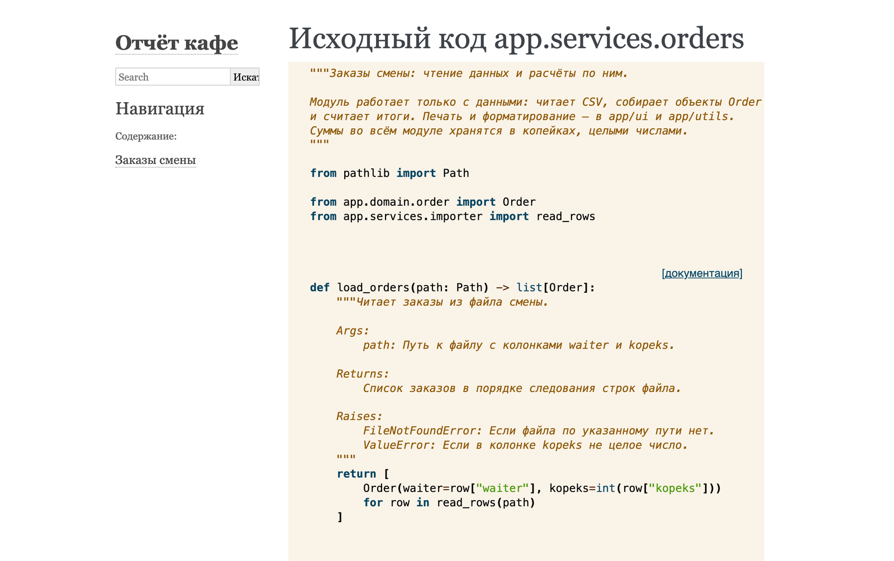

Аннотации типов и документация кода · МДК.01.01 · разработка программных модулей
Глава 4.13
conf.py, autodoc
и napoleon
В этой главе на сайт из главы 4.12 выводятся докстринги модуля app/services/orders.py. Разбор идёт по тем ошибкам, которые встречаются по дороге: неизвестная директива, модуль не найден, разделы Google, показанные простым текстом. Каждую ошибку закрывает одна строка в conf.py. Дальше — где показывать типы, как читать предупреждения о разметке докстринга и как превратить их в ошибку сборки. В конце — задания на своей копии проекта.
- Категория
- Пошаговая работа
- Время
- Около 60 минут
- Расширения
autodoc,napoleon,viewcode- Результат
- Страница модуля с разделами Google на сайте
Часть 1 · Настройки и первый модуль
§1conf.py — программа на Python
В главе 4.12 файл docs/source/conf.py создал мастер. Sphinx выполняет его в начале каждой сборки как обычный модуль Python и после выполнения читает значения переменных с заранее известными именами: project, language, extensions и другими. Переменная с незнакомым именем ничего не меняет и ошибки не вызывает, поэтому имя настройки проверяют по документации Sphinx.
Из того, что conf.py — программа, следуют два свойства. В нём работают импорты и вычисления: в §4 так задаётся путь к проекту. И ошибка в нём останавливает сборку до чтения страниц: если в нём импортируется несуществующий модуль, сборка останавливается с сообщением Configuration error!, сведениями о версиях и путём к файлу журнала с подробностями.
| Раздел файла | Переменные | Что задают |
|---|---|---|
| Project information | project, author, copyright, release | Название, автор и номер выпуска: шапка и подвал страниц |
| General configuration | extensions, templates_path, exclude_patterns, language | Подключённые расширения, служебные папки, язык интерфейса |
| Options for HTML output | html_theme, html_static_path | Тема оформления и папка своих файлов для сайта |
В этой главе в файл добавляются три вещи: путь к проекту, расширения в список extensions и настройки этих расширений. Сначала нужна страница, на которую выводятся докстринги.
§2Страница для модуля: директива automodule
Докстринги на сайт выводятся директивой. Директива в reStructuredText — команда сборщику внутри текста страницы: строка вида .. имя:: аргумент, под ней с отступом параметры. Оглавление .. toctree:: из главы 4.12 — тоже директива. Для модуля Python нужна директива automodule: она импортирует модуль, берёт его докстринг и докстринги его функций и классов и вставляет их в страницу.
Создайте файл docs/source/orders.rst
В проводнике VS Code щёлкните правой кнопкой по папке docs/source → New File, имя — orders.rst. Содержимое:
Заказы смены ============ .. automodule:: app.services.orders :members:
Заголовок станет заголовком страницы и пунктом оглавления. В директиве аргумент app.services.orders — модуль в той записи, в какой его импортируют в коде. Параметр :members: выводит, кроме докстринга модуля, все его функции и классы с докстрингами; без него на странице окажется один абзац о модуле.
Добавьте страницу в оглавление
В index.rst под параметрами toctree оставьте пустую строку и впишите имя файла без расширения, с тем же отступом в три пробела:
.. toctree:: :maxdepth: 2 :caption: Содержание: orders
Соберите и прочитайте ошибку
.venv/bin/sphinx-build -M html docs/source docs/build -q.venv\Scripts\sphinx-build -M html docs/source docs/build -q. Ключ -q убирает строки об этапах и оставляет только предупреждения и ошибки — так их легче читать.
…/docs/source/orders.rst:4: ERROR: Unknown directive type "automodule". .. automodule:: app.services.orders :members: [docutils]
Ошибка в строке 4 файла orders.rst: директива automodule неизвестна. Директиву добавляет расширение autodoc, а список extensions в conf.py пуст. Сборка при этом не остановилась: страница orders.html создана с одним заголовком, а директива пропущена. Так Sphinx ведёт себя с большинством ошибок в страницах — сообщает и продолжает.
§3Расширение autodoc
Расширение Sphinx — модуль Python, который добавляет директивы, настройки или этапы сборки. Часть расширений входит в сам Sphinx, их имена начинаются с sphinx.ext.. Подключают расширение строкой с его именем в списке extensions.
sphinx.ext.autodoc добавляет директивы automodule, autoclass, autofunction. Чтобы вывести докстринги, autodoc импортирует модуль тем же механизмом, что инструкция import, и читает атрибут __doc__ — тот самый, что разобран в главе 4.7.
Подключите autodoc
В conf.py замените строку extensions = []:
extensions = [
'sphinx.ext.autodoc',
]
Запятая после последнего элемента не обязательна. С ней следующее расширение добавляется новой строкой, и предыдущую строку трогать не нужно.
Соберите ещё раз
WARNING: autodoc: failed to import 'services.orders' from module 'app'; the following exception was raised:
Traceback (most recent call last):
File "…/sphinx/ext/autodoc/_dynamic/_importer.py", line 131, in _import_from_module_and_path
module = _import_module(module_name, try_reload=True)
^^^^^^^^^^^^^^^^^^^^^^^^^^^^^^^^^^^^^^^^^^^^
File "…/sphinx/ext/autodoc/_dynamic/_importer.py", line 218, in _import_module
raise ModuleNotFoundError(msg, name=modname) # NoQA: TRY301
^^^^^^^^^^^^^^^^^^^^^^^^^^^^^^^^^^^^^^^^^^^^
ModuleNotFoundError: No module named 'app'
[autodoc.import_object]
Директива теперь известна, но autodoc не смог импортировать модуль. Трассировку читают с конца: последняя строка ModuleNotFoundError: No module named 'app' — пакета app Python не нашёл. Строки File … выше относятся к коду самого Sphinx, в них искать ошибку не нужно. В квадратных скобках в конце — вид предупреждения, autodoc.import_object.
§4Путь к проекту в sys.path
Когда в терминале выполняют python main.py, Python ищет импортируемые модули в папке, где лежит запускаемый файл, — в корне проекта. Там лежит app/, и import app проходит. Команда sphinx-build — программа из папки .venv, и папки проекта в её списке поиска нет. Этот список хранится в переменной sys.path: Python перебирает папки из него по порядку, пока не найдёт модуль с нужным именем.
Ассоциация: список адресов у курьера
У курьера список складов, где можно забрать посылку. Он объезжает их по порядку и забирает посылку на первом складе, где она есть. Если нужного склада нет в списке, курьер вернётся с ответом «не найдено», даже если посылка лежит в соседнем доме.
sys.path — список папок. Инструкция import app проверяет их по порядку. Корня проекта в списке у sphinx-build нет, поэтому app не найден, хотя лежит рядом с docs. Решение — добавить корень проекта в начало списка.
Добавьте корень проекта в начало sys.path
В начало conf.py, перед разделом Project information, вставьте:
import sys from pathlib import Path # Корень проекта — на две папки выше conf.py: docs/source → docs → проект. sys.path.insert(0, str(Path(__file__).resolve().parents[2]))
Разбор строки справа налево:
__file__— путь к самомуconf.py. Sphinx задаёт эту переменную, когда выполняет файл.Path(…).resolve()— объект пути из модуляpathlib, приведённый к полному виду от корня диска..parents[2]— папка на два уровня выше папки файла. Индексы считаются так:parents[0]—docs/source,parents[1]—docs,parents[2]— корень проекта.str(…)— путь как строка: вsys.pathхранят строки.sys.path.insert(0, …)— вставка в начало списка. Так папка проекта проверяется раньше остальных, и пакетappберётся из проекта, даже если пакет с таким именем установлен в окружение.
Путь вычисляется от файла conf.py, поэтому строка работает из любой папки, откуда запущена сборка, и на любой системе. В документации Sphinx и в чужих проектах встречается старая запись sys.path.insert(0, os.path.abspath('../..')): она даёт тот же результат и опирается на то, что Sphinx выполняет conf.py из его собственной папки.
Соберите и посмотрите на страницу
…/app/services/orders.py:docstring of app.services.orders.revenue_by_waiter:6: ERROR: Unexpected indentation. [docutils]
Модуль импортирован, сообщение о нём пропало. Осталась одна ошибка: в докстринге revenue_by_waiter, в строке 6 от начала докстринга, неожиданный отступ. Строка 6 — продолжение описания параметра top с отступом в восемь пробелов. Откройте страницу «Заказы смены» в браузере.

load_orders слились в один абзац, а у revenue_by_waiter продолжение описания top вынесено отдельным абзацем с отступом. Этому абзацу соответствует ошибка Unexpected indentation.Причина в формате. autodoc вставляет докстринг в страницу как текст reStructuredText. Разделы Args: и Returns: — разметка формата Google из главы 4.8, для reStructuredText это обычные строки, а отступ в продолжении строки — ошибка. Описания параметров в разметке Sphinx записываются полями :param orders: и :returns: — так выглядит формат reStructuredText из той же главы 4.8. Переписывать докстринги не нужно: перевод из Google в поля делает расширение napoleon.
Часть 2 · Формат Google и типы
§5Расширение napoleon: разделы Google
sphinx.ext.napoleon перехватывает докстринг до того, как его разберёт reStructuredText, находит разделы Google и NumPy и переписывает их полями Sphinx. В файле проекта ничего не меняется: преобразование идёт в памяти во время сборки.
Args:
top: Сколько официантов оставить…
Returns:
Выручка в копейках…
Raises:
ValueError: Если список заказов пуст.
:param top: Сколько официантов оставить…
:returns: Выручка в копейках…
:raises ValueError: Если список заказов пуст.
Подключите napoleon и выберите формат
extensions = [
'sphinx.ext.autodoc',
'sphinx.ext.napoleon',
]
napoleon_google_docstring = True
napoleon_numpy_docstring = False
По умолчанию napoleon распознаёт оба формата. В проекте курса принят Google (глава 4.8), поэтому разбор NumPy выключен: раздел, случайно записанный в стиле NumPy, останется на странице как есть, и это будет видно при проверке.
Соберите и сравните страницу
Вывод с ключом -q пуст: ошибок нет. Изменение conf.py пересобирает все страницы, поэтому -E здесь не нужен.

top собрано в один пункт. Раздел Note у sort_orders_in_place стал блоком «Примечание» внизу.| Раздел Google в докстринге | Подпись на странице при language = 'ru' |
|---|---|
Args: | Параметры |
Returns: | Результат |
Yields: | Yields — эта подпись в Sphinx 9.1.1 не переведена |
Raises: | Исключение |
Attributes: | отдельные атрибуты класса; поле «Переменные» с настройкой napoleon_use_ivar, глава 4.14 |
Note: | Блок «Примечание» в рамке |
Example: | Подзаголовок «Пример» и текст под ним |
§6Где показывать типы
Типы параметров и результата autodoc берёт из аннотаций — тех, что расставлены в главах 4.1–4.5. По умолчанию они стоят в подписи функции, как в коде: revenue_by_waiter(orders: list[Order], top: int = 0) → dict[str, int]. Настройка autodoc_typehints переносит их в поля под описанием.
| Значение | Где типы на странице |
|---|---|
'signature' (по умолчанию) | В подписи функции |
'description' | Подпись без типов; тип в скобках после имени параметра и отдельное поле «Тип результата» |
'both' | И там и там |
'none' | Нигде |

autodoc_typehints = 'description'. Подпись короче: revenue_by_waiter(orders, top=0). Тип list[Order] стоит в скобках после orders, внизу добавлено поле «Тип результата». Сравните с кадром в §5, где типы в подписи.В курсе оставлено значение по умолчанию: подпись на сайте совпадает с подписью в коде и в подсказке редактора, и функция во всех трёх местах записана одинаково. Вариант 'description' удобен для функций с длинными типами, когда подпись перестаёт помещаться в строку. В обоих случаях типы на сайт приходят из аннотаций, и повторять их в разделе Args: не нужно — это правило главы 4.8 здесь видно на странице.
§7Предупреждения о разметке докстринга
Докстринг на сайте разбирается как reStructuredText, и некоторые знаки в нём служат разметкой. Звёздочка начинает выделение курсивом (*текст*), две звёздочки — жирным, обратная кавычка — ссылку или код. Если в описании встречается одиночный такой знак, Sphinx ищет пару, не находит её и печатает предупреждение. Ruff такие места не отмечает: он проверяет наличие и оформление разделов, разметку текста он не разбирает.
Добавьте в описание одиночную звёздочку
В докстринге revenue_by_waiter допишите к описанию top пример:
top: Сколько официантов оставить в результате. Значение 0
означает, что возвращаются все, *3 — три лучших.
Проверьте файл Ruff: ruff check app/services/orders.py отвечает All checks passed!.
Соберите с ключом -E
Правка в модуле, страница orders.rst не менялась. Чтобы Sphinx наверняка перечитал докстринг, соберите всё: sphinx-build -M html docs/source docs/build -q -E.
…/app/services/orders.py:docstring of app.services.orders.revenue_by_waiter:4: WARNING: Inline emphasis start-string without end-string. [docutils]
Сообщение: «начало выделения без конца» в строке 4 докстринга revenue_by_waiter. Номер строки считается от начала докстринга после обработки napoleon, поэтому он не совпадает с номером строки в файле: ищут по имени функции и тексту.

3 стала ссылкой: так Sphinx помечает место с ошибкой разметки. Сайт собран, но текст выглядит не так, как написан.Сделайте предупреждение ошибкой сборки
Без настроек сборка с предупреждениями завершается успешно, и в длинном выводе их легко пропустить. Ключ -W превращает каждое предупреждение в ошибку, --keep-going при этом дособирает сайт до конца и показывает все предупреждения сразу: sphinx-build -M html docs/source docs/build -q -E -W --keep-going.
Вывод тот же, но команда завершается с кодом 1. Проверьте код сразу после сборки: echo $?$LASTEXITCODE. Ответ 1 — ошибка, 0 — успех. По этому коду проверка в репозитории (глава 4.15) отличает сломанную документацию от исправной.
Исправьте описание
Есть два способа. Первый — записать пример словами: значение 3 — три лучших. Второй — оформить знак как код двойными обратными кавычками: ``*3``, тогда звёздочка выводится моноширинным шрифтом и разметкой не считается. Для описания параметра подходит первый способ. Соберите с -W --keep-going ещё раз: вывод пуст, echo $?$LASTEXITCODE отвечает 0.
| Что написано в докстринге | Что ответит Sphinx | Как исправить |
|---|---|---|
Одиночная * или **, например **kwargs | Inline emphasis start-string without end-string или Inline strong start-string… | Взять в ``…`` |
| Список без пустой строки перед ним | Предупреждения нет: пункты слиты с предыдущим абзацем в одну строку | Пустая строка перед первым пунктом |
Одиночная обратная кавычка ` | Inline interpreted text or phrase reference start-string without end-string | Двойные обратные кавычки для кода |
§8Расширение viewcode: ссылка на исходник
Описание отвечает на вопрос «что делает функция». Чтобы посмотреть, как она это делает, читателю сайта нужен код. Расширение sphinx.ext.viewcode копирует исходники описанных модулей на сайт в виде страниц с подсветкой и ставит у каждой функции ссылку на её код.
extensions = [
'sphinx.ext.autodoc',
'sphinx.ext.napoleon',
'sphinx.ext.viewcode',
]


docs/build/html/_modules/.В conf.py добавлены путь к проекту и три расширения. Страница «Заказы смены» показывает докстринг модуля и три функции с полями «Параметры», «Результат», «Исключение» и ссылками на исходный код. Сборка с -W --keep-going проходит без предупреждений.
Пока на сайте один модуль из десяти, и его страница написана руками. В главе 4.14 страницы для всех модулей создаёт sphinx-apidoc.
import sys from pathlib import Path # Корень проекта — на две папки выше conf.py: docs/source → docs → проект. sys.path.insert(0, str(Path(__file__).resolve().parents[2])) project = 'Отчёт кафе' copyright = '2026, Макаров М. Н.' author = 'Макаров М. Н.' release = '1.0' extensions = [ 'sphinx.ext.autodoc', 'sphinx.ext.napoleon', 'sphinx.ext.viewcode', ] napoleon_google_docstring = True napoleon_numpy_docstring = False templates_path = ['_templates'] exclude_patterns = [] language = 'ru' html_theme = 'alabaster' html_static_path = ['_static']
§9Соберите сами
Команды записаны коротко, для терминала с активированным окружением. Если в задании меняется только модуль в app/, собирайте с -E: так Sphinx перечитает все докстринги.
Соберите сами · модули на сайте
Пять опытов: страница второго модуля, сломанный путь, сборка без napoleon, типы в описании и проверка своего докстринга. Ожидаемые результаты сняты на третьем архиве.
Страница модуля calculator
- Создайте
docs/source/calculator.rstпо образцуorders.rst: заголовок «Расчёты по оценкам», директиваautomoduleдляapp.services.calculatorс параметром:members:. - Добавьте
calculatorв оглавлениеindex.rstстрокой подorders. - Соберите:
sphinx-build -M html docs/source docs/build -q.
Вывод пуст. В колонке «Навигация» два пункта. На новой странице — функции calculate_average и grade_bounds, у обеих поле «Исключение» с ValueError. У grade_bounds в поле «Результат» — «Пара «минимум, максимум» именно в этом порядке.», тип tuple[int, int] — в подписи.
Если вместо функций на странице только заголовок
Проверьте имя модуля в директиве: оно пишется через точки, как в import, без .py на конце. Затем — отступ параметра :members:: три пробела, как у директивы toctree. Если имя модуля неверное, в выводе будет failed to import с последней строкой No module named ….
Сломанный путь
- Закомментируйте строку
sys.path.insert(…)вconf.py— поставьте#в её начале. - Соберите с
-q -E. - Уберите
#и соберите ещё раз.
Два предупреждения autodoc: failed to import — для orders и для calculator, каждое с последней строкой ModuleNotFoundError: No module named 'app'. На сайте у обеих страниц остались только заголовки. После возврата строки предупреждения пропадают.
Сборка без napoleon
- Закомментируйте строку
'sphinx.ext.napoleon',в списке расширений. - Соберите с
-q -Eи откройте страницу «Заказы смены». - Верните строку.
Ошибка Unexpected indentation в докстринге revenue_by_waiter, как в §4, а на странице — разделы Args: и Returns: простым текстом. Настройки napoleon_google_docstring и napoleon_numpy_docstring при выключенном расширении ничего не делают и ошибки не вызывают: это переменные с незнакомыми для Sphinx именами (§1).
Типы в описании
- Добавьте в
conf.pyстрокуautodoc_typehints = 'description'. - Соберите и сравните страницу с кадром в §6.
- Удалите строку, чтобы вернуть типы в подпись.
Подписи без типов: load_orders(path), revenue_by_waiter(orders, top=0). Тип Path — в скобках после path, у каждой функции появилось поле «Тип результата».
Проверка своего докстринга
- Выберите функцию в
app/utils/formatter.pyи допишите в её описание фразу со звёздочкой, напримерЗнак * в заголовок не попадает. - Добавьте страницу для
app.utils.formatterи соберите с-q -E -W --keep-going. - Проверьте код завершения, исправьте описание по таблице из §7 и соберите ещё раз.
Одиночная звёздочка, после которой стоит пробел, разметкой не считается: предупреждения не будет. Предупреждение Inline emphasis start-string without end-string появляется, когда после звёздочки сразу идёт буква или цифра, как в *3. Если предупреждение есть, код завершения — 1; после исправления — 0 и пустой вывод.
§10Проверьте себя
Почему директива automodule неизвестна в свежем проекте Sphinx?
Её добавляет расширение sphinx.ext.autodoc, а после мастера список extensions в conf.py пуст.
Почему autodoc не находит пакет app, хотя он лежит рядом с docs?
Python ищет модули в папках из sys.path. Команда sphinx-build запускается из .venv, корня проекта в этом списке нет. Строка sys.path.insert(0, …) в conf.py добавляет его в начало.
Чему равны parents[0], parents[1] и parents[2] для пути docs/source/conf.py?
docs/source, docs и корень проекта.
Что делает napoleon с докстрингом в файле проекта?
Ничего: файл не меняется. Napoleon переписывает разделы Google в поля Sphinx в памяти, во время сборки.
Ruff отвечает All checks passed, а Sphinx печатает предупреждение. Как такое возможно?
Ruff проверяет, что докстринг есть и разделы оформлены по правилам. Sphinx разбирает текст докстринга как reStructuredText и находит ошибки разметки: одиночные *, обратные кавычки, отступы. Это разные проверки, и в проекте нужны обе.
.. automodule:: app.services.orders
:members:
sys.path.insert(0, str(
Path(__file__).resolve().parents[2]))
sphinx.ext.autodoc
sphinx.ext.napoleon
sphinx.ext.viewcode
napoleon_google_docstring = True
napoleon_numpy_docstring = False
autodoc_typehints = 'signature'
'description' — в поля
-q -E -W --keep-going
код 1 — есть предупреждения
Итог главы
conf.py — программа на Python, которую Sphinx выполняет перед сборкой. Докстринги на страницу выводит директива automodule с параметром :members:; её добавляет расширение autodoc. Чтобы autodoc импортировал пакет app, корень проекта добавляют в начало sys.path строкой с Path(__file__).resolve().parents[2]. Разделы Google переводит в поля Sphinx расширение napoleon, формат NumPy в курсе выключен. Типы на сайт приходят из аннотаций и по умолчанию стоят в подписи; autodoc_typehints = 'description' переносит их в поля. Докстринг на сайте разбирается как reStructuredText, поэтому одиночные * и обратные кавычки дают предупреждения, которых Ruff не показывает. Ключи -W --keep-going делают такие предупреждения ошибкой сборки с кодом 1. Расширение viewcode добавляет ссылки на исходный код. Следующая глава — разметка reStructuredText, оглавление и страницы для всех модулей сразу.
- Директивы и настройки autodoc, в том числе
autodoc_typehints— sphinx.ext.autodoc. - Разделы Google и настройки napoleon — sphinx.ext.napoleon.
- Ссылки на исходники — sphinx.ext.viewcode.
- Ключи
-q,-E,-W,--keep-going— sphinx-build. - Поиск модулей по
sys.path— документация Python, sys.path. - Выводы и кадры получены на Sphinx 9.1.1 сценарием
shots/sphinx_run.pyна третьем архиве темы.